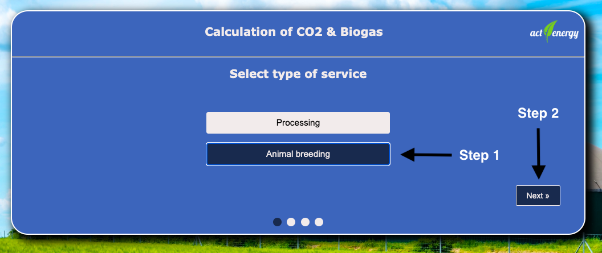
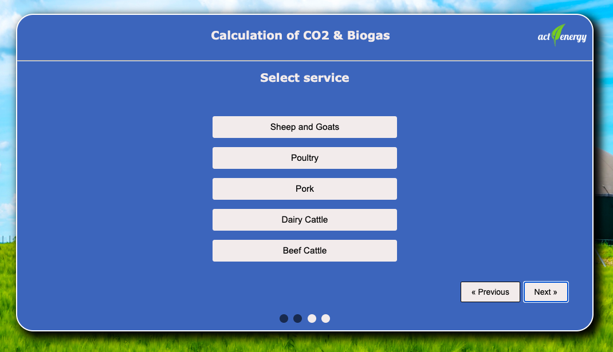
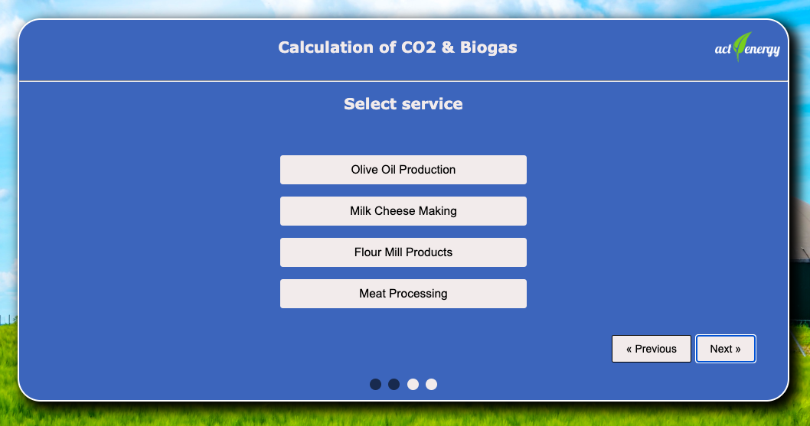
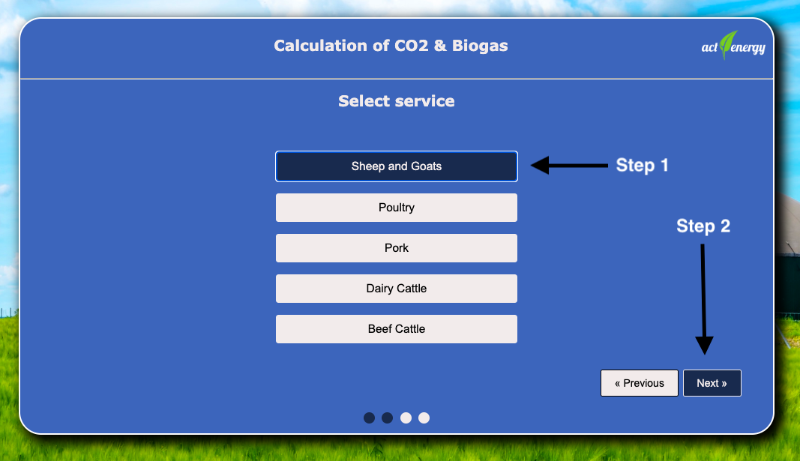
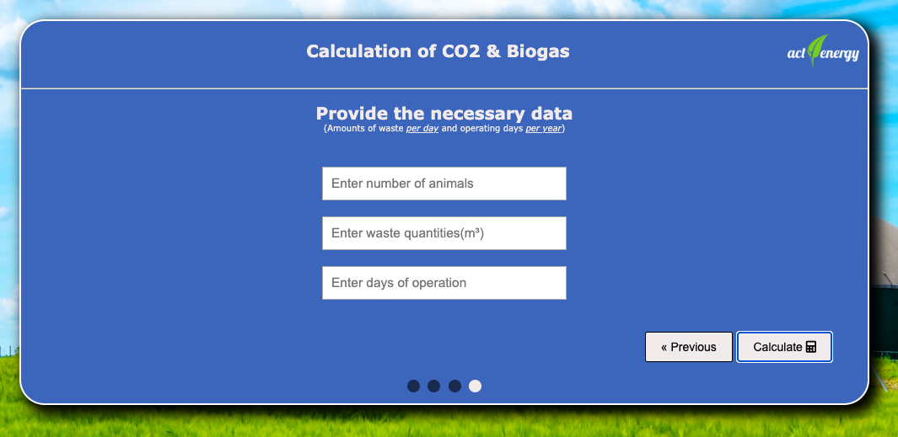
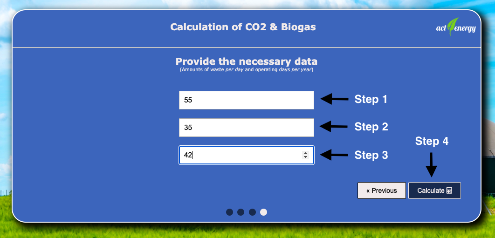
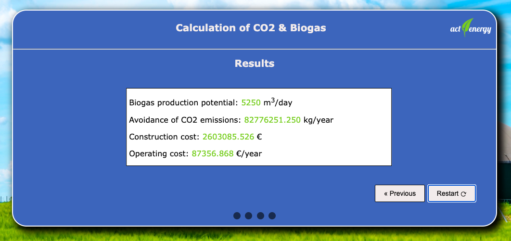

- 1. Select type of business
- 2. Select business
- 3. Input data from the user
- 4. Results
- 5. Calculation of results
- 5.1 Calculation of biogas production potential
- 5.2 Calculation of CO2 emission reduction
- 5.3 Calculation of construction cost
- 5.4 Calculation of electricity
consumption costs - 5.5 Calculation of mechanical equipment
maintenance costs - 5.6 Calculation of the cost of checking
if the operation is good - 5.7 Calculation of Staff annual costs
- 5.8 Calculation of operating cost
In the 1st step of the form, the user selects the type of business he is interested in.
Two options are available.
The first concerns processing businesses
and the second concerns animal breeding businesses.
Suppose that the user selects the business type "Animal breeding":
After making his selection, the user is transferred to the second step of the form, in which he is asked to select the animal breeding business he is interested in (e.g. poultry, pigs, cattle, etc.):
If the user changes his/her mind and wants to go back and select a different type of businesses, he/she can do so by clicking the "Previous" button. In this case, the user will have to choose between different types of processing businesses (eg olive oil production, milk cheese making, etc.):
Suppose the user chooses the Sheep and Goat breeding business:
After his or her
selection, the user is transferred to the third step of the form in which he/she is asked to
fill in the following data:
(a) Number of animals
(b) Produced
quantities of waste
(c) Business operating days.

Let's say that the user inputs that he has 55 Goats and Sheep from which 35 m3 of waste are produced daily and this business operated for 42 days:
The number entered by the user that refers to the number of animals, must be ≥ 0
The number entered by the user that refers to the product's
waste quantities must be ≥ 0
The number entered by the user that refers to the operating days of the business, must be ≥ 0 and ≤ 365
After the user presses the calculation button for the data he provided, he is transferred to the 4th step of the form where he can see the results based on the choices he made. If the user wishes to start over from the beginning filling out the form then he can press the button "Restart"

5.1 Calculation of biogas production potential:
The biogas production potential for the considered waste is calculated from the
equation below:
QBG-d = QW-d * Y(BG/W)
Where:
QBG-d -> the daily biogas production (m3 biogas/day) (calculated by the application)
QW-d -> the daily amount of waste (m3 waste/day) (to be filled in by the user)
Y(BG/W) -> the biogas recovery factor of the considered waste (m3 biogas / m3 waste) (chosen by the application)
For the case of the biogas recovery factor (Y(BG/W)) the application
takes into account the following data:
| Type of business -> "Breeding animals" | |
|---|---|
| Business | Biogas recovery factor |
| Sheep and Goats | 150 m3/tn waste |
| Poultry | 200 m3/tn waste |
| Pork | 6 m3/m3 waste |
| Dairy Cattle | 20 m3/m3 waste |
| Beef Cattle | 50 m3/tn waste |
| Type of business -> "Processing" | |
|---|---|
| Business | Biogas recovery factor |
| Olive oil production | 70 m3/tn waste |
| Milk cheese making | 30 m3/m3 waste |
| Flour mill products | 800 m3/tn waste |
| Meat Processing | 80 m3/tn waste |
5.2 CO2 emission reduction calculation:
The annual reduction of CO2 emissions from the utilization of the produced biogas as
substitute for conventional fossil fuels can be calculated from the equation:
GHG(kgCO2/year) = 1.87 * Q BG-year * CH4 * T
Where
GHG = annual amounts of CO2 avoided (kg/year) (calculated by the application)
QBG-d = the annual amount of biogas produced (m3/year) (calculated by the application)
CH4 = the percentage of methane in the biogas (%) (chosen by the application)
T = the annual number of operating days of the installation (to be filled in by the user)
The percentage of biogas to methane for the examined wastes is shown in the
below tables:
| Type of business -> "Animal breeding" | |
|---|---|
| Business | Percentage of methane in biogas (%) |
| Sheep and Goats | 55% |
| Poultry | 60% |
| Pork | 55% |
| Dairy Cattle | 60% |
| Beef Cattle | 55% |
| Type of business -> "Processing" | |
|---|---|
| Business | Percentage of methane in biogas (%) |
| Olive Oil Production | 65% |
| Milk Cheese making | 50% |
| Flour Mill Products | 60% |
| Meat Processing | 70% |
5.3 Calculation of construction cost:
The construction cost of the biogas production facility is calculated from the
equation:
CAPEX = a * VDG
VDG = QBG-d / 1.35
a= -40*ln(VDG ) + 1000
Where:
CAPEX -> manufacturing cost (€)
VDG -> the volume of the anaerobic digestion tank (m3 ) (calculated by the application)
QBG-d -> the daily biogas production (m3/day) (calculated by the application)
a -> the coefficient of unit construction cost of the installation (€/m3 ) (the
calculated by the application)
5.4 Calculation of electricity consumption costs:
The annual cost of electricity consumption by the facility under consideration is
calculated from the equation:
OPEX electr (€/year) = 20*(kW)*(T)*(C)
kW = [-0.008*ln(V DG ) + 0.082]*V DG
VDG = QBG-d / 1.35
Where:
OPEX electr -> the annual cost of electricity consumption (€/year)
kW -> the installed power of the mechanical equipment (kW)
C -> the cost of electricity (= 0.15 € / kWh-el) (it is chosen by the application or
the user)
T -> the number of days of operation of the facility (to be filled in by the user)
VDG -> the volume of the anaerobic digestion tank (m3) (calculated by the application)
QBG-d -> the daily biogas production (m3/day) (calculated by the application)
5.5 Calculation of mechanical equipment maintenance costs:
The annual maintenance cost of the installed mechanical equipment (OPEX
mech, €) can be calculated from the equation:
OPEX mech (€/year) = -0.0046*(VDG ) 2 + 27.5*VDG - 34.8
VDG = QBG-d / 1.35
Where:
OPEX mech -> the annual maintenance cost of mechanical equipment (€/year)
VDG -> the volume of the anaerobic digestion tank (m3 ) (calculated by the application)
QBG-d -> the daily biogas production (m3/day) (calculated by the application)
5.6 Calculation of the cost of checking if the operation is good:
The annual cost of checking the good operation of the installation can be calculated from
the equation:
OPEX monitor (€/year) = 1800*ln(VDG) – 5300
VDG = QBG-d / 1.35
Where:
OPEX monitor -> the annual cost of checking the good operation of the installation (€/year)
VDG -> the volume of the anaerobic digestion tank (m3 ) (calculated by the application)
QBG-d -> the daily biogas production (m3/day) (calculated by the application)
5.7 Calculation of Staff annual costs:
The annual cost of Staff fees for the operation of the facility is calculated
from the equation:
OPEX labor (€/year) = 10 000 ln(V DG ) – 50 000
VDG = QBG-d / 1.35
Where:
OPEX labor -> annual cost of Staff fees (€/year)
VDG -> the volume of the anaerobic digestion tank (m3 ) (calculated by the application)
If VDG < 300 m3 then OPEX labor = 0
5.8 Operating cost calculation:
The total annual operating cost of the business is calculated from the equation:
OPEX total (€/year) = OPEX electr + OPEX mech + OPEX monitor + OPEX labor
Where:
OPEX electr -> the annual cost of electricity consumption (€/year)
OPEX mech -> the annual maintenance cost of mechanical equipment (€/year)
OPEX monitor -> the annual cost of checking the good operation of the installation (€/year)
OPEX labor -> annual cost of Staff fees (€/year)